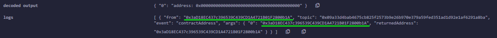
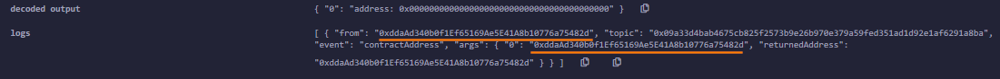

Delegate Call vs “regular” Call (example 1)
In the following file we have 2 contract, but this is just for testing purpose. Usually we should have them in 2 separate files and bond with an interface
CallingContract address 0xddaAd340b0f1Ef65169Ae5E41A8b10776a75482d
pragma solidity 0.6.6;
contract LogicContract {
address returnedAddress; //holds the value of the returned address from
//the print_address function()
event contractAddress(address returnedAddress );
function print_address() public returns(address){
returnedAddress = address(this); //get the current address of the contract with the this keyword
emit contractAddress(returnedAddress); //to view the address, we issue an Event
//this print out the current value of the contract address.
}
}
contract CallingContract {
address returnedAddress; //Note the use of the exact same returnedAddress variable
// from the LogicContract. This is important when using delegate calls
// as the call will modify that variable locally on the Calling Contract
// from the Logic Contract remote functionality
//If this variable does not exist it cannot be set,
// you should always have the same variables in each contract
// and have them in the correct order when using delegate call
address logic_pointer = address(new LogicContract()); //Address of the Logic Contract, for testing purpose otherwise we should
// use an interface with 2 separate files
function print_my_delgate_address() public returns(address){
logic_pointer.delegatecall(abi.encodeWithSignature("print_address()")); //Delegate Call
//abi.encodeWithSignature is simply
// an encoding mechanism before sending our data
}
function print_my_call_address() public returns(address){
logic_pointer.call(abi.encodeWithSignature("print_address()")); //"regular" Contract
}
}
•
print_my_call_address() → “regular” call
 The address in logs of the event(all events create a log) is
NOT the same of our
calling contract This is the address of
Logic Contract(we do not know that address before):
0x3aD18EC437c396539C439CD1A4721B01F2800b1A•
print_my_delgate_address() → delegate call
 The address in the logs of the event(all events create a log) is the
CallingContract address
0xddaAd340b0f1Ef65169Ae5E41A8b10776a75482d This, because with
Delegate Call the code was run as if it was imported into the
CallingContract using the context of the
CallingContract for the returnedAddress variable posted to the event.
This can become dangerous when variables name(example: address returnedAddress) does not match up